Exploratory Data Analysis: EMS Incident Dispatch Data in New York (2025)
Synopsis
Link to dataset.
This dataset contains information about incidents reported through 911 services and stored in the EMS Computer Aided Dispatch System for New York in 2025. It serves to understand the allocation of resources and the Fire Department's response to emergencies. The dataset is provided by the Fire Department of New York City annually and was last updated October 29, 2025.
Data Overview
Each row of the dataset represents one incident created and closed in the dispatch system. It contains details such as the date the incident was created and closed, initial and final call types and severity levels, the dispatch response and travel times, and the location of the incident (by borough and districts). The incident response time is the time from the incident being recorded to the time first on scene. The incident travel time is the time from the first unit assignment to the time first on scene.
Biases in the Data
Bias present in the data could come from how the EMS employees' interpreted incident calls or perceived the actual incidents. Due to the high stress work environment and personal biases towards certain demographics of people, call service workers may have underestimated incident severity levels or misclassified call types and on-scene workers may have underestimated their travel times for a better performance outlook or forgot to reassess severity levels and call types.
Visualizations
Summary Statistics
Quantitative Variables: Incident Response Time and Incident Travel Time
The mean, standard deviation, and median (in minutes) for both the response time and travel time are shown. The median response time is 7.88 minutes and the median travel time is 7.38 minutes. So, the process of recording an incident and assigning a unit may have taken about 30 seconds. Both the mean and median response times are greater than the same measures for travel time. This makes sense since response time covers the entire duration of an incident. The standard deviations/spread of the variables are about the same.
Ordinal Variables
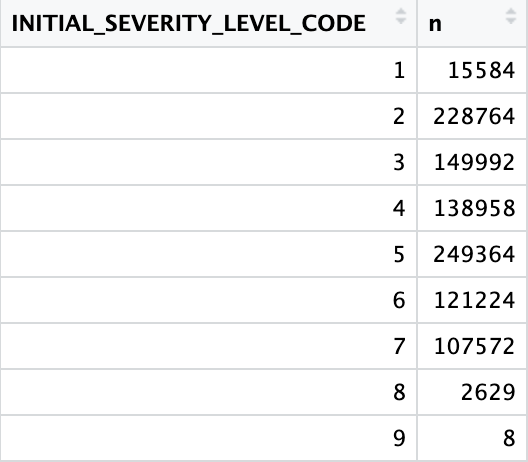
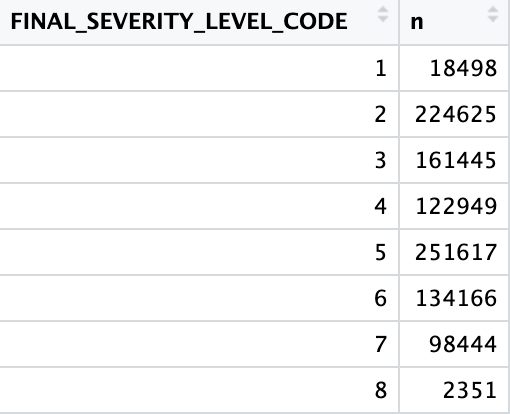
Categorical Variables
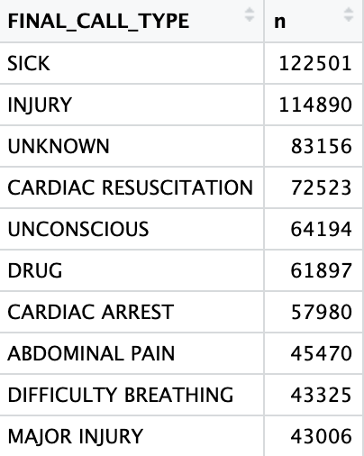
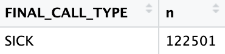
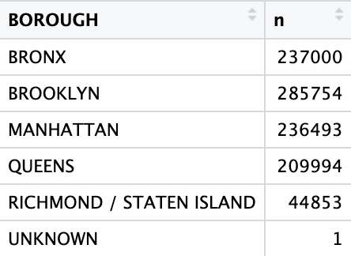
Distribution/Frequency Visualizations
Quantitative Variables
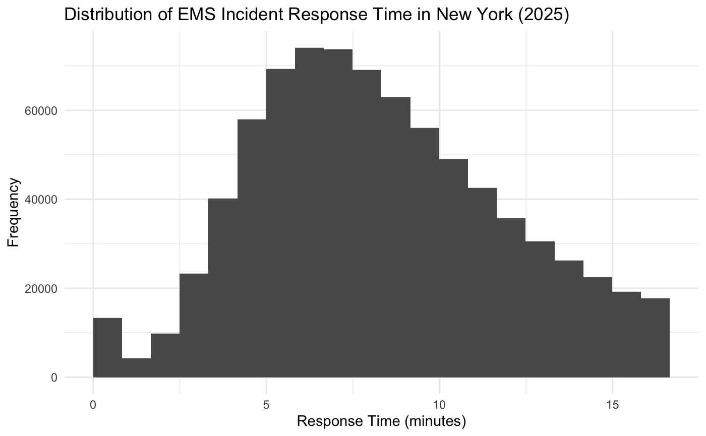
The histogram shows that in the year 2025, most response times in New York took about 6 to 7.5 minutes.
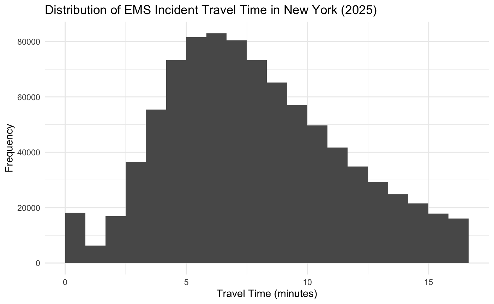
Ordinal Variables
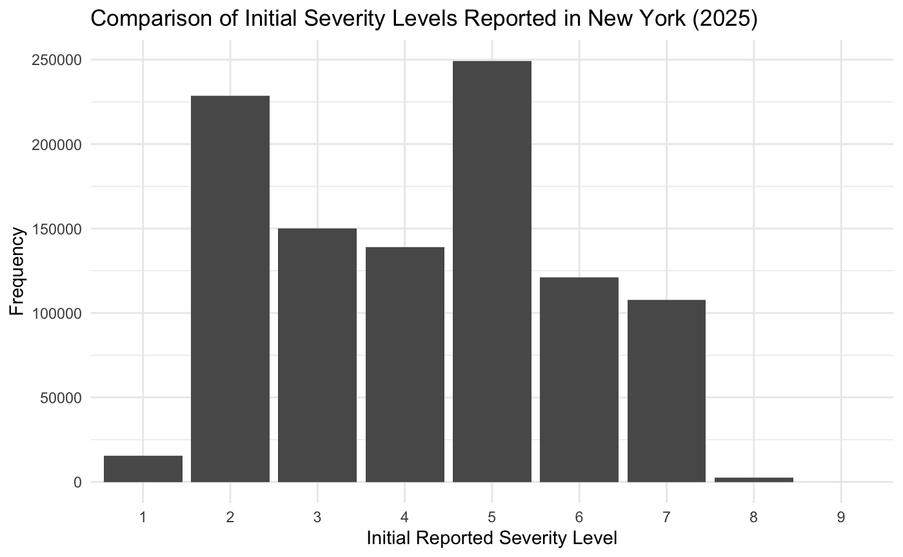
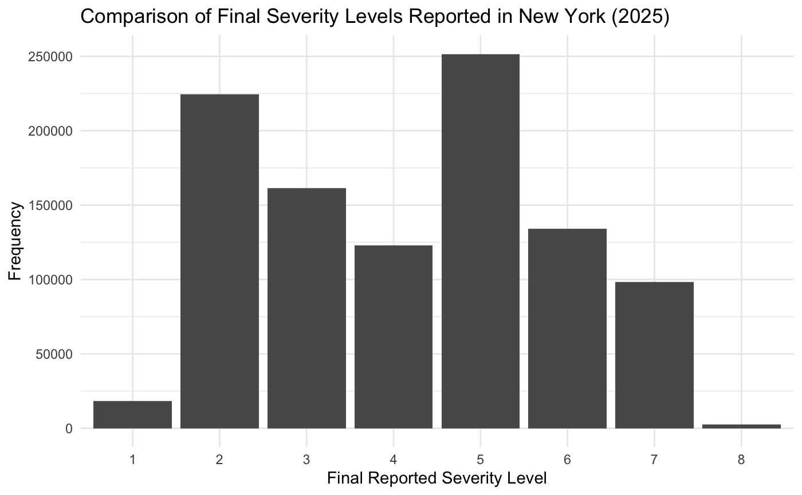
Categorical Variables
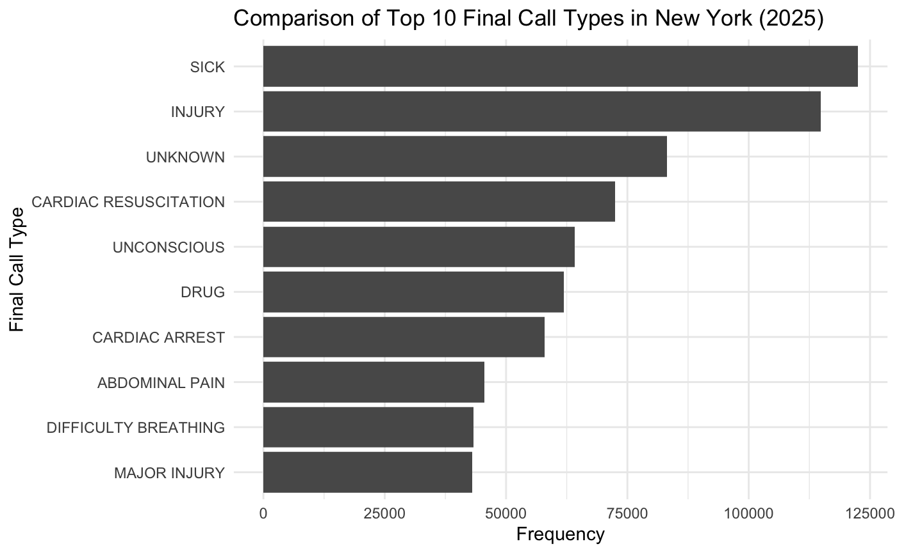
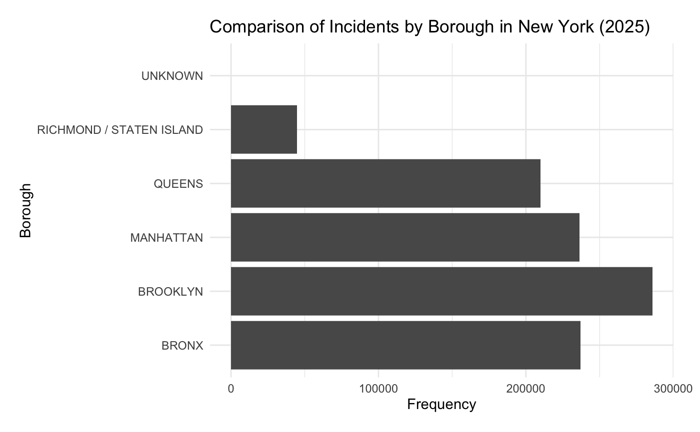
Relationships Between Variables


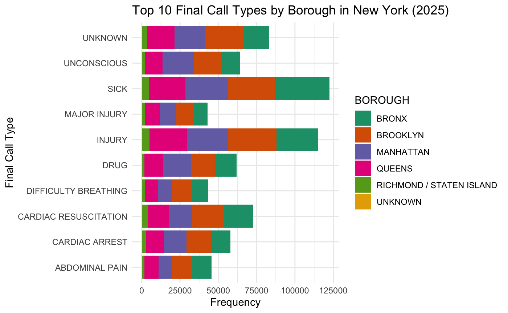